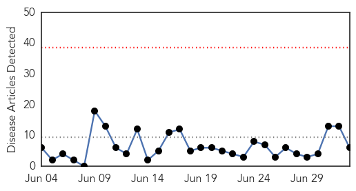
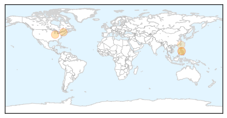

30 Day Trends
Web: 0 alerts, 0 warnings
Twitter: 0 alerts, 0 warnings
Top Articles:
- 0.946
- Alarm raised over measles
- 0.910
- State Health Officials Prepare For Possible Measles Outbreak
- 0.907
- Measles Outbreak Puts Local Health Officials On High Alert
- 0.809
- Measles outbreak complicates 2 big upcoming Amish events
- 0.585
- Fifth German measle case confirmed
- 0.536
- Measles spread cause for concern at Buggy Showcase in Ohio
Top Tweets:
-
No tweets found for Jul 03, 2014
Web/News Articles
Tweets

Article Locations
Article Confidences